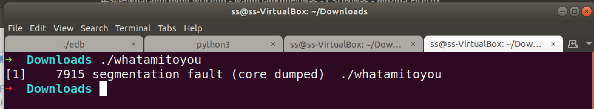
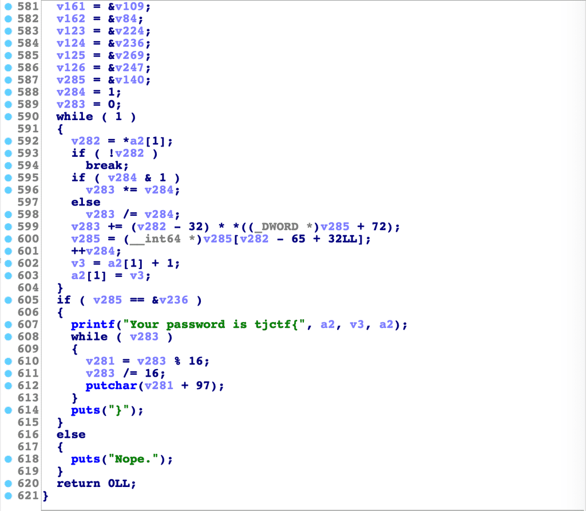
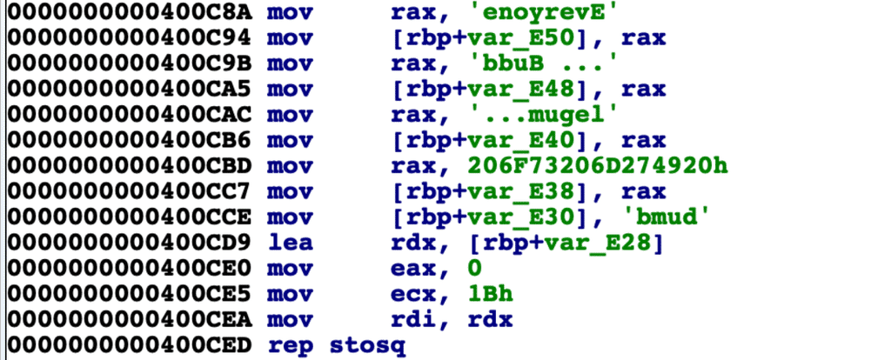
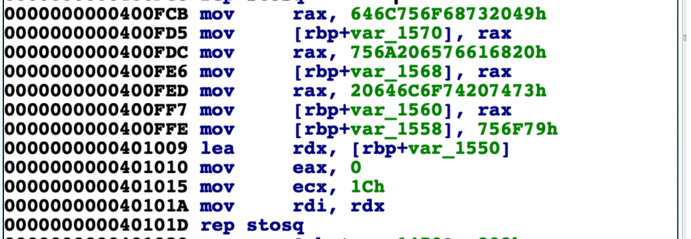
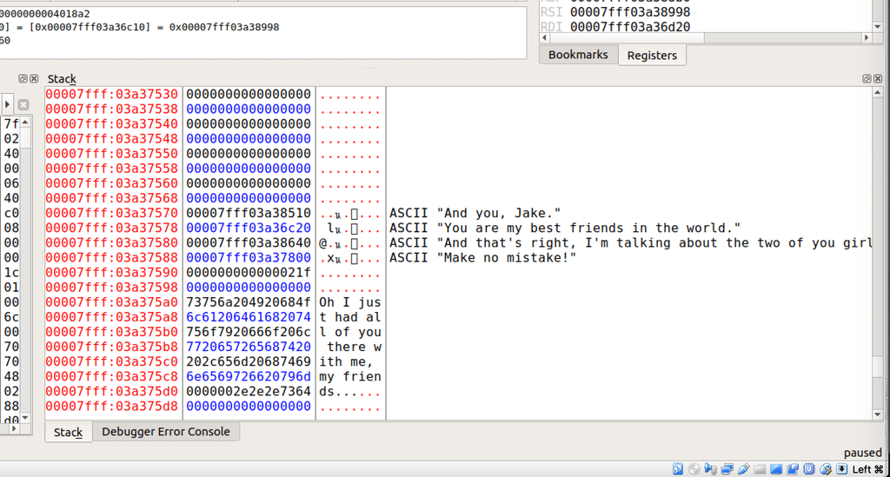

实验吧 whatamitoyou
听说ctf挺好玩，刚好最近在看汇编，上实验吧找到了这道题，上手这道题的时候一脸懵逼，只有一个whatamitoyou的文件，在macOS下发现无法运行，然后放到虚拟机ubuntu中运行，显示segment fault

我想要不直接放ida pro里跑跑吧，使用ida pro的反编译功能（在函数上按下F5）得到下面的伪代码。下面的代码是main函数中前部的代码，可以看到很多字符串，这是我使用ida的转换功能（按键r），原来是32位的整数，因此会显示成大端表示的样子（反向）。

可以通过搜索里面的词第一行，am i a joke your knight or your brother便找到这是一首歌的一句歌词，这首歌是<My Best Friends In The World (What Am I To You?)>，代码里面的字符串都是里面的歌词，下面是这首歌的歌词：
1 | Everyone... bubblegum... I'm so dumb |
接着将代码拉到最下面发现主要逻辑：

其中a2是程序传入的参数数组，所以这个程序是需要传递参数的！接着在592行看到这里需要将取出参数a[1]，应该也就是argv[1]，然后v282=*a2[1]，将第一个字符取出。
在第600行涉及一个v282 - 65 + 32得到一个索引，而v285大概是一个数组里面保存的还是数组指针。这时候我就想要不看看汇编，对第600行按下Tab键，查看对应的汇编代码。
刚刚对应的是汇编的0x4018ED这一位置开始的代码，可以看到
1 | .text:00000000004018DB movsx eax, [rbp+var_11] |
对应v285 = (__int64 *)v285[v282 - 65 + 32LL];这行代码，其中v282是var_11，v285是var_8，可以看到每次从传入的参数arg中依次取一个字符a，然后rax+8*(a-65+32)后计算得到在v285中的值作为新的rax，这个rax作为新的v285。
v285的初始值是在0x400C8A处：

这一句歌词Everyone... bubblegum... I'm so dumb是整首歌的第一句，临时存放在[rbp+ var_E50…var_E38]这个范围内，然后使用rep stosq一共ecx次，每次8字节（q）复制0，之后的代码也是将这些字符串放到指定地址，这时在v285 = (__int64 *)v285[v282 - 65 + 32LL];这段代码是需要找到下一个地址，这个地址是在一个内存地址中保存，因此这里有一个地址赋值操作。
而地址0x401394开始的代码都是取地址赋值操作（使用lea取内存地址）。
可以看到这里的地址都是之前的歌词的地址，而Everyone... bubblegum... I'm so dumb的下一句是I should've told you, 在代码地址0x400FCB处。

可以看到第一句歌词存放在[rbp+var_E28]开头的地址，而第二句歌词存放在[rbp+var_1570]，需要通过v285[]找到存放两者之间映射的地址，可以找到在后面有取地址赋值的操作，在代码地址0x4013A9处。存放在内存[rbp+var_D40]处。
这时需要计算它们之间的距离，这个距离等于(v282-65+32)*8。(乘以8是因为汇编代码地址0x4018ED所写)
首先计算[rbp+var_E50]与[rbp+var_D40]相差0x110的距离，带入0x110 = (v282-65+32)*8可得v282为67即字符C。
接着根据第二句歌词对应的第三句歌词得到第二个v282。直到最后一句歌词。答案CBDABCADBCCABBABBABACBCCABDADBABABB。（这个好花时间，后面找的网上答案）
网上其他的方法：
因为这些都是ebp是动态的，所以使用动态调试工具edb debugger来调试，在运行到0x40190e这句汇编代码时停止，可以看到栈中因为之前的赋值、取地址代码，已经将歌词写入了，这样就能很方便的找到。

- 本文链接：https://ssdemajia.github.io/2019/07/24/%E5%AE%9E%E9%AA%8C%E5%90%A7-whatmaitoyou/
- 版权声明：本站所有文章除特别声明外，均采用 CC BY-NC-SA 3.0 CN 许可协议。转载请注明出处！